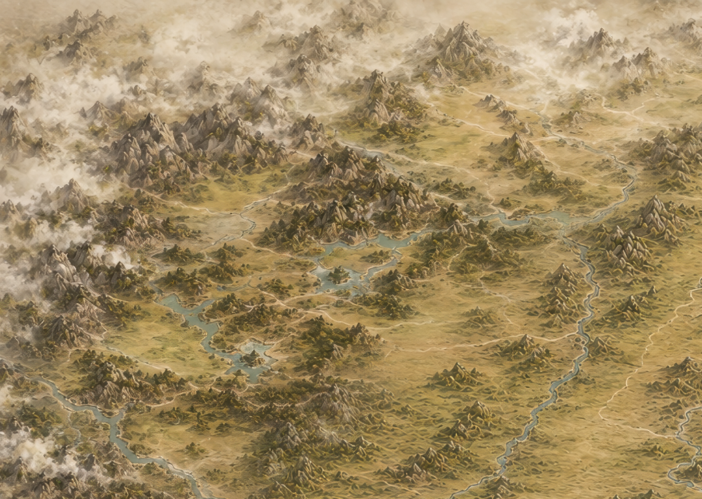
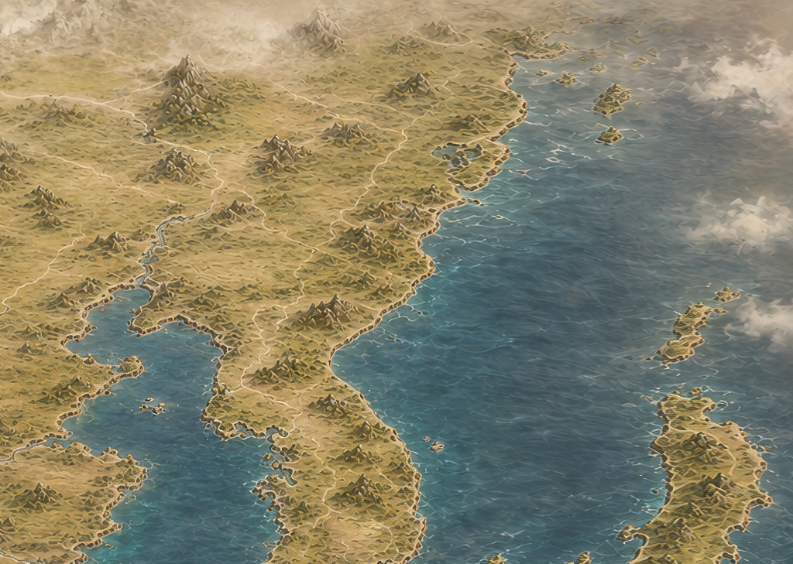
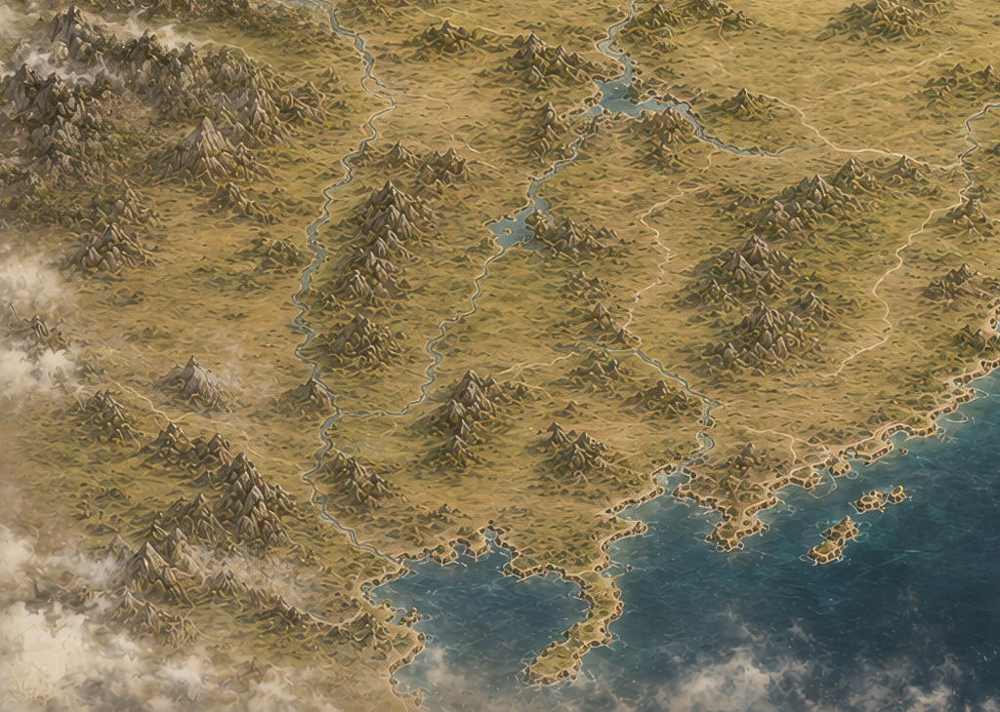
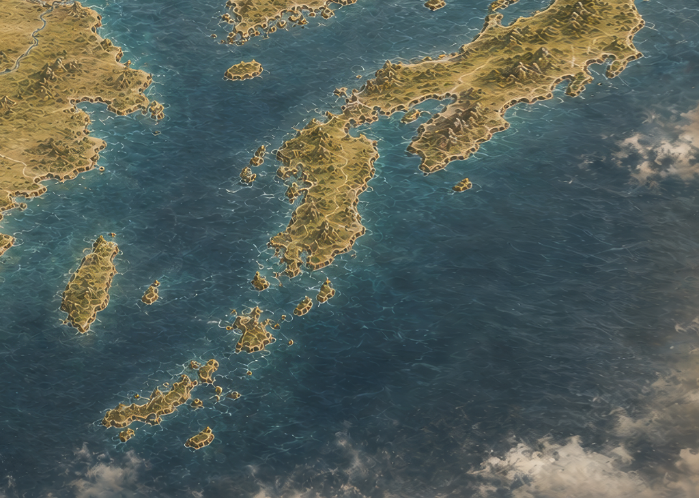

EASTWAR 개발일지 #017
월드맵 이식 & 카메라가 전장을 따라 다닌다
2026년 5월 27일전투는 더 화끈하게, 세계는 이제 그려지기 시작했다
이번 이틀은 방향이 두 갈래였다. 하나는 지금 있는 전투를 더 화끈하게 만드는 것. 다른 하나는 이 전투가 벌어질 진짜 세계, 월드맵을 처음으로 그리기 시작하는 것. 완전히 다른 두 작업 같지만, 사실 같은 목표를 보고 있다. "전투 데모"에서 "전략 게임"으로 넘어가는 것.
카메라가 전투를 따라가기 시작했다
지금까지 전투 화면은 카메라가 고정되어 있었다. 유닛이 화면 어디에 있든 카메라는 그대로였다. 이번엔 여기에 살아있는 느낌을 주기로 했다. 유닛을 선택하거나, 이동하거나, 공격하거나, 고유특기를 쓰거나, 지원군이 등장할 때 — 카메라가 그 장면 쪽으로 부드럽게 따라간다.
근데 카메라가 움직이면서 예상 못 한 문제가 딸려왔다. 화면은 카메라를 따라 움직이는데, 그 위에 떠 있는 방향 화살표나 이동 후 선택 버튼 같은 것들이 잠깐 유닛 위치에서 떨어져 보이는 거다. 카메라가 세상을 움직이는 것과, 화면 위에 고정되어야 할 UI가 서로 다른 계산 방식을 쓰고 있어서 생긴 문제였다. 이 둘의 타이밍을 맞추는 데 몇 번의 수정이 더 들어갔다.
고유특기, 이제 진짜 "퍽" 하고 꽂힌다
저번에 고유특기 시스템을 처음 넣었을 때는 발동하면 그냥 큰 알림창 하나가 뜨는 느낌이었다. 이번엔 여기에 타격감을 입혔다. 화면이 짧게 흔들리고, 먹물이 확 퍼지는 듯한 충격 효과가 같이 들어가고, 등장하는 타이밍도 턴이 바뀔 때 뜨는 짧은 알림 정도의 리듬으로 맞췄다. "떴다가 사라지는 안내창"이 아니라 "퍽 치고 빠지는 한 방"처럼 느껴지게 만드는 게 목표였다.
드디어, 지도가 생겼다
그리고 이번 이틀의 진짜 하이라이트. 처음으로 진짜 월드맵 그림이 프로젝트 안에 들어왔다. 지도를 4조각으로 나눠서 이어붙이는 방식인데, 이렇게 하면 나중에 지역별로 그림을 더 세밀하게 다듬거나 교체하기가 훨씬 쉬워진다.




이 4장을 그냥 화면에 붙이는 게 끝이 아니었다. 씬 구조도 처음부터 제대로 잡았다. 지도 타일층, 나중에 길이 놓일 층, 도시가 놓일 층, 군단이 움직일 층, 구름이나 깃발 같은 연출이 들어갈 층 — 이렇게 역할별로 층을 나눠서 앞으로 뭘 추가하든 서로 안 엉키게 만들었다.
도시가 지도 위에 서다
지도가 생겼으니 그 위에 도시를 놓을 차례였다. 낙양, 평양, 한성, 경주, 사비, 업성, 성도, 건업, 교토, 오사카, 큐슈, 에도 — 웹 버전에 이미 있던 도시 데이터를 기준으로 하나씩 마커를 찍었다.
여기서 원칙을 하나 확실히 했다. 웹 버전의 좌표는 어디까지나 "일단 이 근처에 놓자"는 초안일 뿐이고, 최종 위치는 내가 직접 에디터 화면에서 마우스로 옮긴 자리가 기준이 되게 만든 것. 처음엔 지도 타일과 도시 마커가 서로 다른 좌표계를 쓰고 있어서 도시들이 지도 바깥 회색 영역에 떠 있는 웃긴 상황도 있었는데, 이걸 하나의 기준으로 통일했다. 지도 타일 4장도 마찬가지로, 코드가 자동으로 위치를 계산하지 않고 내가 에디터에서 직접 맞춘 자리를 그대로 존중하도록 바꿨다. 도시 이름표가 도시 아이콘을 따라 같이 움직이지 않던 것도 이번에 같이 잡았다.
다음 이야기
이제 지도와 도시가 자리를 잡았으니, 다음은 그 도시들 사이로 군단이 실제로 움직이고, 전투가 벌어지는 순간 이 월드맵이 전투 화면과 연결되는 차례다.